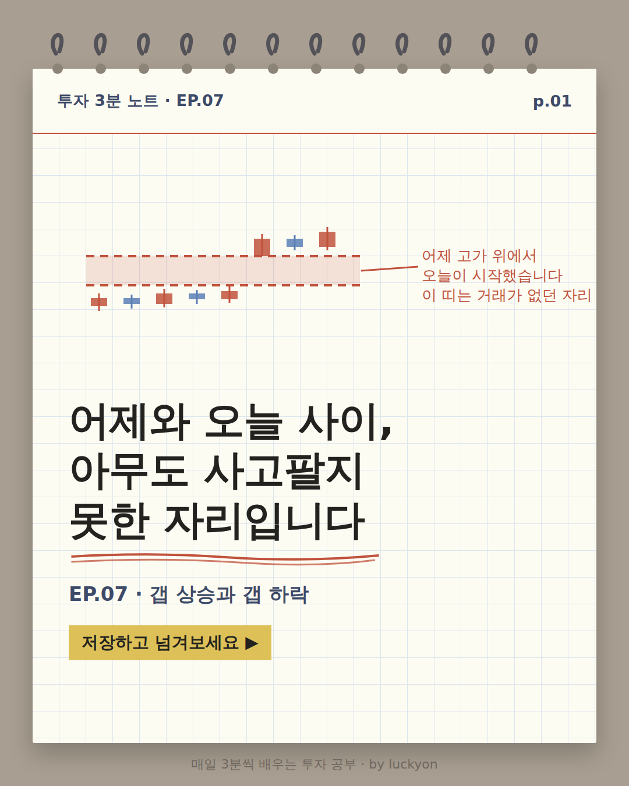
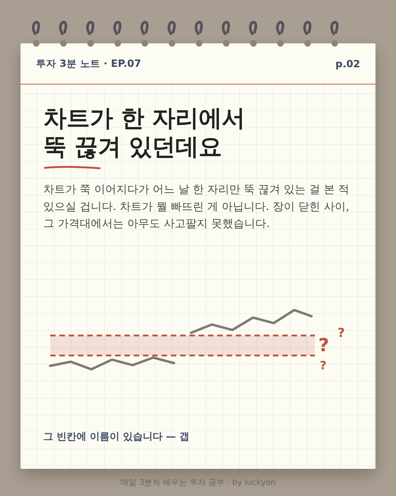
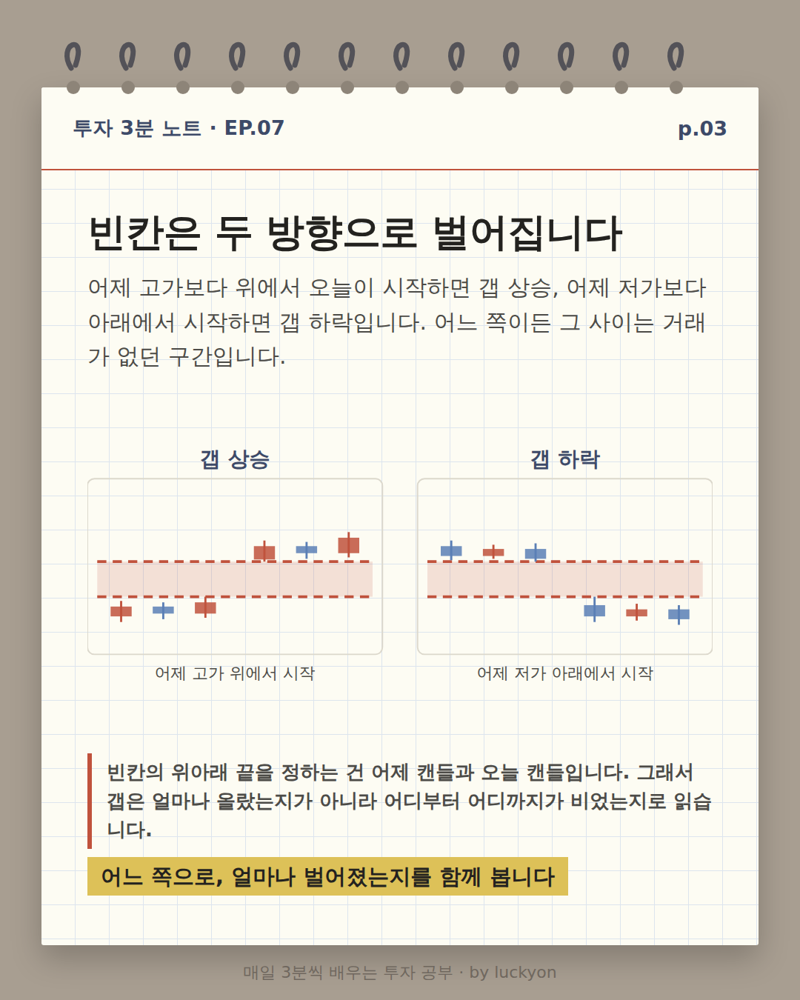
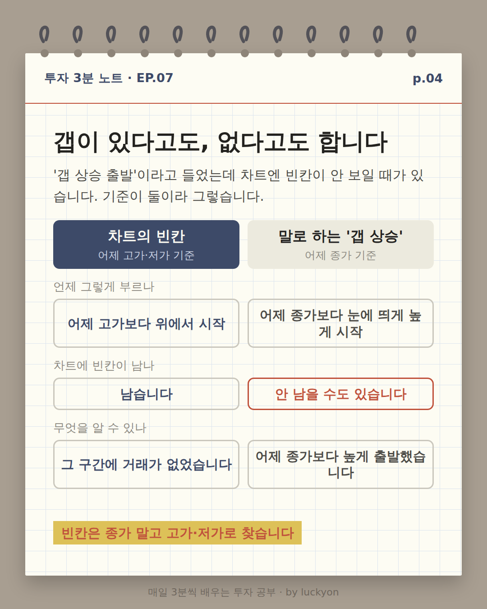
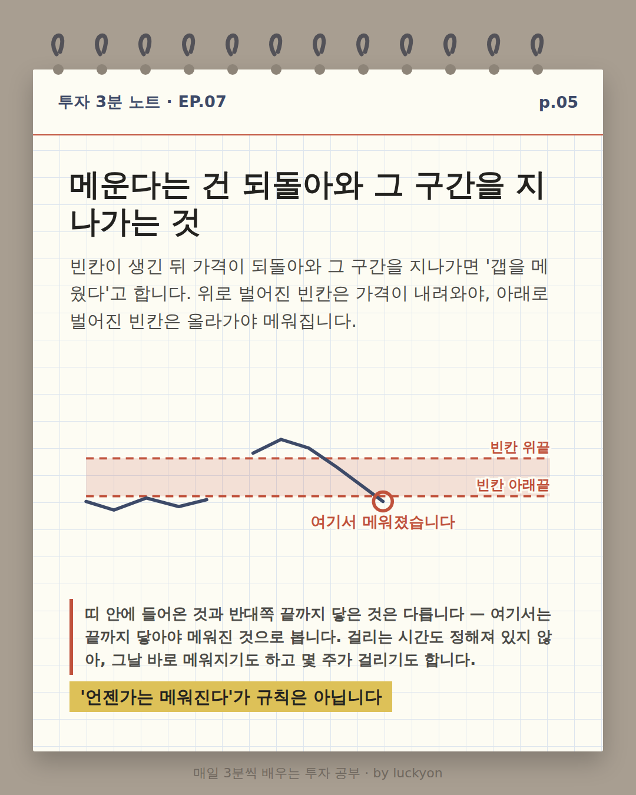
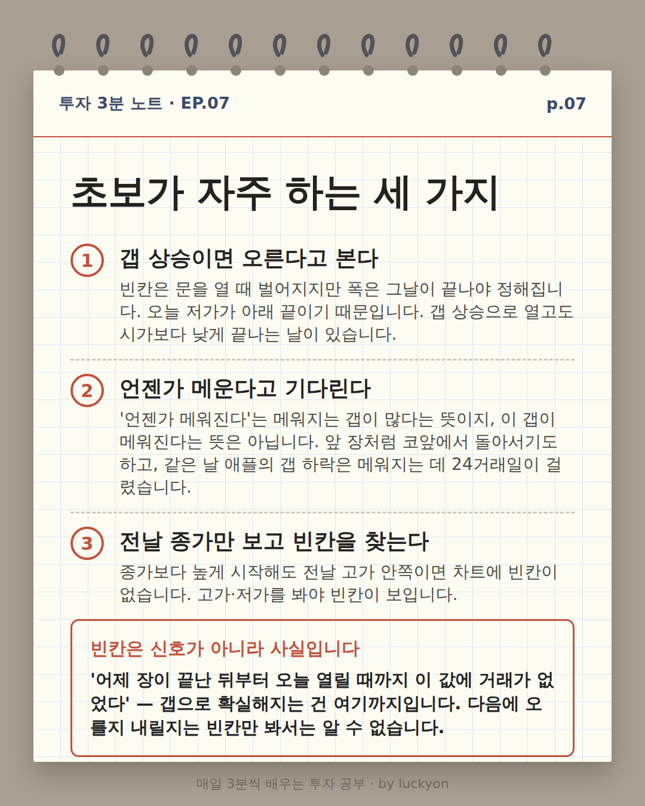
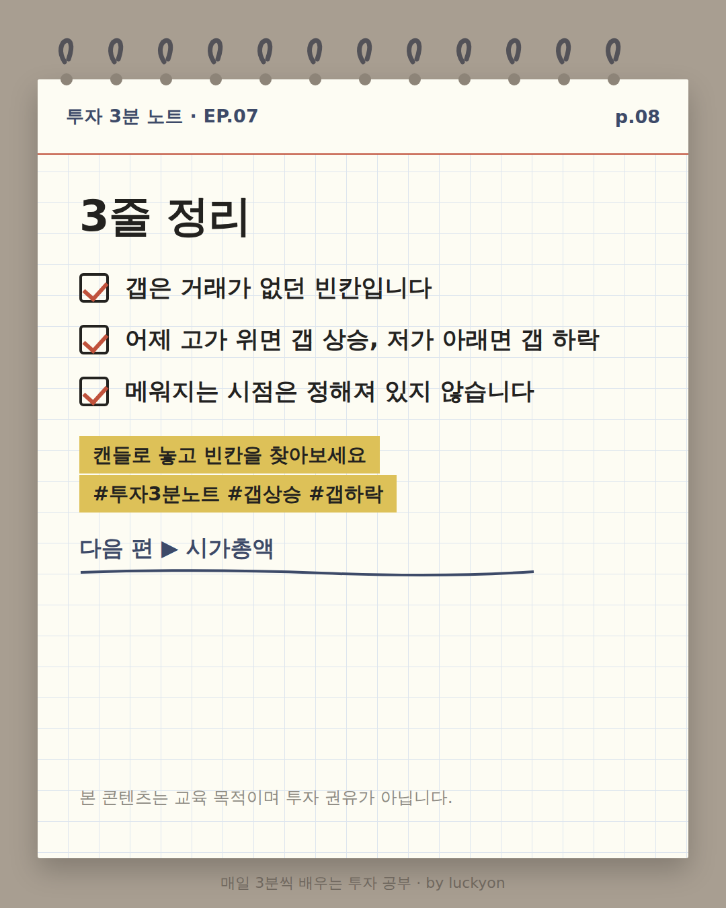
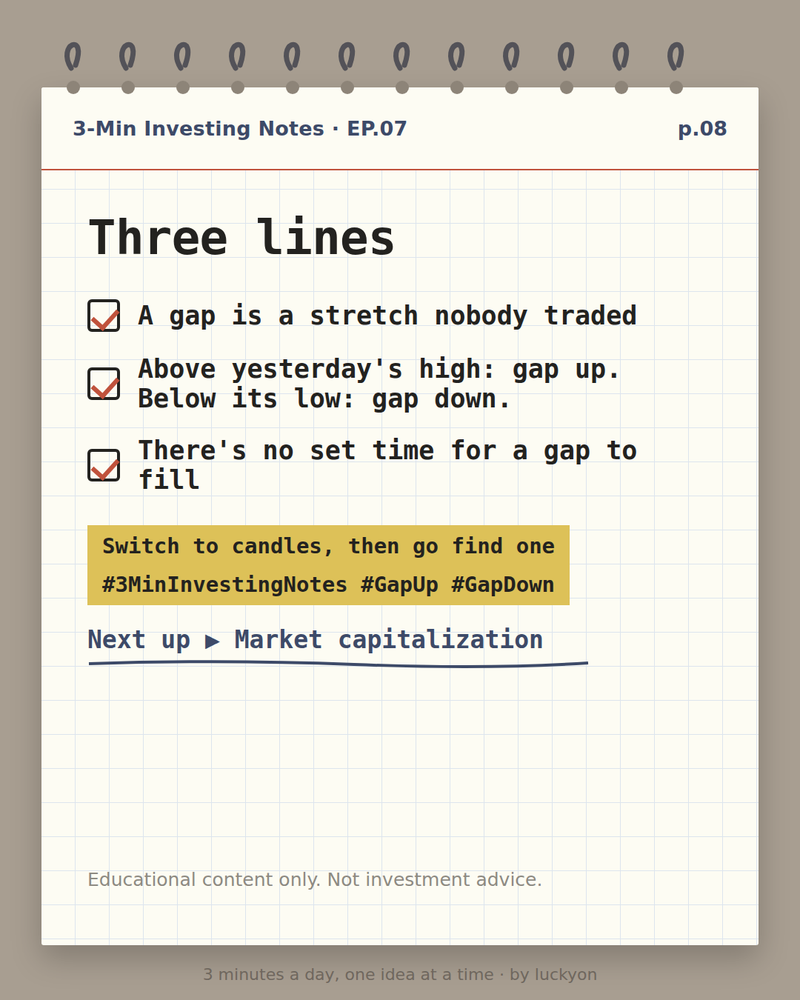

버튼을 누르면 GitHub 이슈 작성 화면이 열립니다. 내용은 미리 채워져 있으니 제출(Submit)만 누르시면 됩니다.
제출하면 다음 확인 루틴이 읽고 처리한 뒤, 결과를 카카오톡으로 알려드립니다.
시세 검증 기록
KO — 삼성전자(005930.KS) KST 2026-07-31 봉 — 시가 257,000 / 고가 267,000 / 저가 243,000 / 종가 262,500 / 거래량 58,478,873. 전일(7/30) 고가 226,000 · 종가 207,000. 시가가 전일 고가보다 31,000원 위 → 진짜 갭(빈칸 226,000~243,000). PlayMCP UsStockInfo-get_historical_stock_prices 조회. ※ 이 도구의 KRX 일봉은 15:00Z 로 찍히며 실제 거래일은 KST 기준 +1일이다. 오프셋 증명: 이 시리즈의 봉 날짜가 **일~목에만** 떨어지고 금·토에는 한 번도 없다(예: 2026-06-14는 일요일인데 봉이 있다 — KRX 는 일요일에 열지 않으므로 날짜가 밀린 것이다). 휴장일 교차검증도 했으나 8/17(광복절 대체공휴일)은 어느 해석으로도 비어 있어 판별력이 없고, 판별력이 있는 것은 어린이날 5/5·지방선거 6/3 두 건이다. 뉴스 대조: 7/28 삼성전자 -13.39% 220,000원 마감(토큰포스트·더벨) / 7/29 장중 저가 189,200원(위키트리) / 7/30 종가 207,000원(뉴스1) / 7/31 +26.81% 262,500원(아주경제·더벨) — 네 건 모두 조회값과 원 단위까지 일치. 7/31 급등 배경: 7/30 2분기 컨퍼런스콜에서 잉여현금흐름 50%를 배당·자사주 소각 재원으로 쓰겠다는 주주환원 방침 재확인 + 미국 반도체주 급반등(연합뉴스 2026-07-31, 매일경제 계열 보도). 코스피는 이날 +17.91% 6595.45(뉴시스·더벨). 미메움 확인: 7/31 이후 9/11까지 최저 저가는 8/11의 227,500원으로 빈칸 아래끝 226,000원을 1,500원 남겼다. 창(7/30~8/12) 밖 8/13~9/11 구간의 최저 저가도 243,000원(9/3)이라 화면 밖에서 주장이 뒤집히지 않는다. 10봉 평균 거래량 29,839,859주, 7/31 거래량은 그 1.96배.
EN — Apple (AAPL) 2026-07-31 bar — open 304.55 / high 310.42 / low 299.74 / close 308.64 / volume 132,489,100. Prior session (07-30) low 329.31 / close 333.14. Open was $24.76 below the prior low → true gap down; untraded band 310.42–329.31. Source: PlayMCP UsStockInfo-get_historical_stock_prices (US bars are stamped 04:00Z and the date part is the trading day — no offset). News cross-check: Apple reported FQ3 after the close on Thu 2026-07-30; revenue and EPS beat (iPhone +22%) but Q4 guidance of +9–11% revenue missed the >12% consensus, management citing supply constraints and DRAM/NAND price inflation (CNBC live blog 2026-07-30, Bloomberg 2026-07-30, Seeking Alpha, TradingKey). Fill check: the band's upper edge 329.31 was first traded through on 2026-09-03 (high 330.81), 24 trading days after the gap; by 09-11 the high of 336.22 exceeded even the pre-gap close of 333.14. 27-bar average volume 47,166,393 (bars 07-30 through 09-04, matching avg_en); the gap day's 132,489,100 was 2.81x that.
🇰🇷 한국어 — 8장

p.01 크림색 모눈 노트 스타일 표지 카드. 위쪽 작은 차트에 캔들 여덟 개가 있고, 붉은 점선 두 줄 사이가 연분홍 띠로 칠해져 있다. 띠 아래에 캔들 다섯 개, 띠 위에 캔들 세 개가 있어 띠 안에는 캔들이 하나도 걸치지 않는다. 오른쪽 붉은 주석: '어제 고가 위에서 오늘이 시작했습니다. 이 띠는 거래가 없던 자리'. 큰 제목 '어제와 오늘 사이, 아무도 사고팔지 못한 자리입니다'. 아래에 'EP.07 · 갭 상승과 갭 하락'과 노란 형광펜 칩 '저장하고 넘겨보세요'.

p.02 제목 '차트가 한 자리에서 뚝 끊겨 있던데요'. 본문: 차트가 쭉 이어지다가 어느 날 한 자리만 뚝 끊겨 있는 걸 본 적 있으실 겁니다. 차트가 뭘 빠뜨린 게 아닙니다. 장이 닫힌 사이, 그 가격대에서는 아무도 사고팔지 못했습니다. 그림은 회색 꺾은선이 왼쪽 아래에서 이어지다 한 자리에서 끊기고, 붉은 점선 두 줄 사이의 연분홍 띠를 건너뛴 뒤 오른쪽 위에서 다시 이어지는 모습이다. 띠 오른쪽에 붉은 물음표 세 개. 캡션 '그 빈칸에 이름이 있습니다 — 갭'.

p.03 제목 '빈칸은 두 방향으로 벌어집니다'. 본문: 어제 고가보다 위에서 오늘이 시작하면 갭 상승, 어제 저가보다 아래에서 시작하면 갭 하락입니다. 어느 쪽이든 그 사이는 거래가 없던 구간입니다. 그림은 칸 두 개다. 왼쪽 '갭 상승'은 캔들 세 개가 연분홍 띠 아래에 있고 다음 세 개가 띠 위에 있다. 오른쪽 '갭 하락'은 반대로 캔들 세 개가 띠 위에, 다음 세 개가 띠 아래에 있다. 두 칸 모두 띠 안에는 캔들이 없다. 각각 캡션 '어제 고가 위에서 시작', '어제 저가 아래에서 시작'. 붉은 세로줄 문단: 빈칸의 위아래 끝을 정하는 건 어제 캔들과 오늘 캔들입니다. 형광펜 '어느 쪽으로, 얼마나 벌어졌는지를 함께 봅니다'.

p.04 제목 '갭이 있다고도, 없다고도 합니다'. 본문: '갭 상승 출발'이라고 들었는데 차트엔 빈칸이 안 보일 때가 있습니다. 기준이 둘이라 그렇습니다. 표는 두 칸이다. 왼쪽 감청색 '차트의 빈칸 — 어제 고가·저가 기준', 오른쪽 회색 '말로 하는 갭 상승 — 어제 종가 기준'. 세 줄 비교. 언제 그렇게 부르나: 어제 고가보다 위에서 시작 / 어제 종가보다 눈에 띄게 높게 시작. 차트에 빈칸이 남나: 남습니다 / 안 남을 수도 있습니다(붉게 강조). 무엇을 알 수 있나: 그 구간에 거래가 없었습니다 / 어제 종가보다 높게 출발했습니다. 형광펜 '빈칸은 종가 말고 고가·저가로 찾습니다'.

p.05 제목 '메운다는 건 되돌아와 그 구간을 지나가는 것'. 본문: 빈칸이 생긴 뒤 가격이 다시 그 구간을 통과하면 '갭을 메웠다'고 합니다. 위로 벌어진 빈칸은 내려와서, 아래로 벌어진 빈칸은 올라가서 메웁니다. 그림은 붉은 점선 두 줄 사이가 연분홍 띠로 칠해져 있고, 왼쪽 아래의 감청색 선이 띠 아래에서 끊긴 뒤 띠 위에서 다시 시작해 올라갔다가 내려오며 띠를 통과한다. 통과한 지점에 붉은 동그라미와 '여기서 메워졌습니다'. 띠의 두 끝에 '빈칸 위끝', '빈칸 아래끝' 표시. 붉은 세로줄 문단: 띠 안에 들어온 것과 반대쪽 끝까지 닿은 것은 다릅니다 — 여기서는 끝까지 닿아야 메워진 것으로 봅니다. 걸리는 시간도 정해져 있지 않아, 그날 바로 메워지기도 하고 몇 주가 걸리기도 합니다. 형광펜 ''언젠가는 메워진다'가 규칙은 아닙니다'.p.06 제목 '2026년 7월 31일, 삼성전자'. 본문: 7월 28일부터 사흘 내리 밀린 뒤였습니다. 30일 컨퍼런스콜에서 회사가 주주환원 방침을 다시 확인했고 미국 반도체주도 급반등하자, 31일은 전날 고가 226,000원보다 높은 257,000원에 문을 열었습니다. 위 칸은 주가 캔들 열 개(7월 30일~8월 12일)이고 226,000원과 243,000원 사이가 연분홍 띠로 칠해져 '7/31 갭 226,000~243,000'이라 적혀 있다. 7월 31일 캔들의 시가 자리에 붉은 빈 동그라미와 '시가 257,000', 8월 11일 캔들의 저가 자리에 동그라미와 '8/11 저가 227,500 — 1,500 남음'. 8월 초 캔들 여럿이 이 띠 안으로 들어와 있지만 아래끝 226,000원 아래로는 내려가지 않는다. 아래 칸은 거래량 막대이고 7월 31일 막대가 검은 테두리로 강조돼 '평균의 2배 · 5,848만 주', 점선은 '평균 2,984만 주'. 형광펜 '1,500원을 남기고 돌아섰습니다 — 가까이 간 것과 메운 것은 다릅니다'.

p.07 제목 '초보가 자주 하는 세 가지'. 1. 갭 상승이면 오른다고 본다 — 빈칸은 문을 열 때 벌어지지만 폭은 그날이 끝나야 정해집니다. 오늘 저가가 아래 끝이기 때문입니다. 갭 상승으로 열고도 시가보다 낮게 끝나는 날이 있습니다. 2. 언젠가 메운다고 기다린다 — '언젠가 메워진다'는 메워지는 갭이 많다는 뜻이지, 이 갭이 메워진다는 뜻은 아닙니다. 앞 장처럼 코앞에서 돌아서기도 하고, 같은 날 애플의 갭 하락은 메워지는 데 24거래일이 걸렸습니다. 3. 전날 종가만 보고 빈칸을 찾는다 — 종가보다 높게 시작해도 전날 고가 안쪽이면 차트에 빈칸이 없습니다. 고가·저가를 봐야 빈칸이 보입니다. 붉은 테두리 상자: 빈칸은 신호가 아니라 사실입니다. '어제 장이 끝난 뒤부터 오늘 열릴 때까지 이 값에 거래가 없었다' — 갭으로 확실해지는 건 여기까지입니다. 다음에 오를지 내릴지는 빈칸만 봐서는 알 수 없습니다.

p.08 제목 '3줄 정리'. 체크 세 줄: 갭은 거래가 없던 빈칸입니다 / 어제 고가 위면 갭 상승, 저가 아래면 갭 하락 / 메워지는 시점은 정해져 있지 않습니다. 노란 형광펜 두 줄: '캔들로 놓고 빈칸을 찾아보세요', '#투자3분노트 #갭상승 #갭하락'. 아래에 '다음 편 ▶ 시가총액'. 맨 아래 작은 글씨: 본 콘텐츠는 교육 목적이며 투자 권유가 아닙니다.
캡션 (790자)
차트가 한 자리에서 뚝 끊겨 있는 걸 본 적 있으신가요. 그 빈칸이 '갭'입니다.
갭은 가격이 많이 움직인 게 아니라, 그 사이 구간을 아무도 거래하지 않고 건너뛴 것입니다. 어제 고가보다 위에서 시작하면 갭 상승, 어제 저가보다 아래에서 시작하면 갭 하락이고, 빈칸의 두 끝은 어제 캔들과 오늘 캔들이 정합니다.
이번 회차에서 짚은 것 · 차트에 진짜 빈칸이 남으려면 전일 고가·저가 밖에서 시작해야 합니다. 흔히 말하는 '갭 상승 출발'은 전일 종가 기준이라, 그렇게 불러도 차트엔 빈칸이 없을 수 있습니다. · '갭은 언젠가 메워진다'는 규칙이 아닙니다. 그날 바로 메워지기도 하고, 몇 주가 걸리기도 하고, 끝내 안 메워지기도 합니다. 띠 안에 들어온 것과 반대쪽 끝까지 닿은 것도 다릅니다. · 실제 사례는 2026년 7월 31일 삼성전자입니다. 전날 고가 226,000원보다 높은 257,000원에 시작해 262,500원(+26.81%)에 끝났고, 226,000~243,000원 구간이 빈칸으로 남았습니다. 8월에 되돌아왔지만 가장 가까이 간 8월 11일 저가가 227,500원으로 아래끝을 1,500원 남겼습니다.
갭 상승이 '오른다'는 뜻은 아닙니다. 빈칸으로 확실해지는 건 '여기 거래가 없었다' 하나뿐입니다.
차트를 캔들(봉)로 놓고 빈칸을 하나 찾아보세요 — 선 차트로는 빈칸이 보이지 않습니다. 다음 편은 시가총액입니다.
p.01 Cream grid-paper cover card. A small chart at the top shows eight candles. Two red dashed lines enclose a pale pink band; five candles sit below the band and three sit above it, with none crossing into it. Red annotation at right: 'Today opened above yesterday's high. Nobody traded in this band.' Large title: 'Between yesterday and today, a price range nobody could trade.' Below: 'EP.07 - Gap ups & gap downs' and a yellow highlighter chip 'Save this and swipe'.p.02 Title: 'Why does the chart break off right here?' Body: A chart usually runs unbroken, and then one morning it picks up well away from where it left off. Nothing is missing from the chart. While the market was shut, nobody could trade at those prices. The sketch shows a grey zigzag line running along the lower left, stopping, skipping a pale pink band bounded by two red dashed lines, and resuming higher on the right. Three red question marks sit to the right of the band. Caption: 'That empty stretch has a name - a gap'.p.03 Title: 'The empty band opens two ways'. Body: Open above yesterday's high and you get a gap up. Open below yesterday's low and you get a gap down. Either way, the stretch in between went untraded. Two panels. Left, 'Gap up': three candles below a pale pink band, then three candles above it. Right, 'Gap down': three candles above the band, then three below it. No candle enters the band in either panel. Captions read 'Opens above yesterday's high' and 'Opens below yesterday's low'. A red side-rule paragraph reads: Yesterday's candle and today's candle set the two edges. Highlighter: 'Read the direction and the width together'.p.04 Title: 'Two ways to measure it'. Body: You hear a stock 'gapped up', then find no empty band on the chart. There are two yardsticks. A two-column table: left in navy, 'The band on the chart - measured to yesterday's high/low'; right in grey, ''Gapped up' in a headline - measured to yesterday's close'. Three rows. Called a gap when: Opens above that high / Opens above that close. Leaves an empty band? Yes / Not always (highlighted in red). What it establishes: Nobody traded there / Opened above its close. Highlighter: 'Use highs and lows, not the close'.p.05 Title: 'Filling the gap means coming back through it'. Body: When price returns and trades through the empty band, traders say the gap has been filled. A band above gets filled on the way down; a band below, on the way up. The figure shows a pale pink band between two red dashed lines. A navy line runs along below the band on the left, stops, restarts above the band, rises, then falls back down through the band. A red circle marks where it crosses out, labelled 'filled here'. The band edges are labelled 'top edge' and 'bottom edge'. Red side-rule paragraph: There is no set time for it. Some gaps fill the same day, some take weeks, and some are never filled at all. Highlighter: ''It always fills' is not a rule'.p.06 Title: 'Apple, July 31, 2026'. Body: Apple reported after the close on July 30: revenue and profit beat, but next-quarter guidance came in light. The following morning the stock opened at $304.55 - below the $329.31 low of the day before. The upper panel shows 27 daily candles from July 30 to September 4, with a pale pink band between 310.42 and 329.31 labelled 'gap 310.42-329.31'. A red circle on the July 31 candle is labelled 'opened at $304.55'. Candles climb back into the band through late August, and at the 'Sep 3' label a single wick pierces its upper edge, though no candle closes above it. The lower panel shows volume bars; the July 31 bar is outlined in black and labelled '2.8x average - 132.5M', with a dashed line marked 'avg 47.2M'. Highlighter: '24 sessions to come all the way back - unknowable on day one'.p.07 Title: 'Three things beginners get wrong'. 1. Reading a gap up as 'it will rise' - The band opens at the bell, but today's low is its lower edge, so its width is not settled until the close. A stock can gap up and still close below its open. 2. Waiting because 'it always fills' - Apple's band took 24 trading days to fill. Samsung gapped up the same day and still hadn't filled six weeks later. 3. Measuring from yesterday's close - A stock can open above yesterday's close and still leave no band, because it opened inside yesterday's range. Highs and lows are what reveal it. Red bordered box: A gap is a fact, not a signal. All it establishes: between yesterday's close and today's open, no regular-session trade happened in that range. Nothing more.

p.08 Title: 'Three lines'. Three checked lines: A gap is a stretch nobody traded / Above yesterday's high: gap up. Below its low: gap down. / There's no set time for a gap to fill. Two yellow highlighter chips: 'Switch to candles, then go find one' and '#3MinInvestingNotes #GapUp #GapDown'. Below: 'Next up > Market capitalization'. Small print at the bottom: Educational content only. Not investment advice.
캡션 (1440자)
Ever seen a chart break off at one spot and pick up somewhere else? That empty stretch is a gap.
A gap is not a big move in price. It is a stretch of prices that nobody traded, because the market was closed while opinion changed. Open above yesterday's high and you get a gap up; open below yesterday's low and you get a gap down. Yesterday's candle and today's candle set the two edges.
In this episode - For a real band to show on the chart, price has to open outside yesterday's range. A stock that merely opens above yesterday's close is often called a gap up, but it can leave no band at all. - 'Gaps always fill' is not a rule. Some fill the same day, some take weeks, and some are never filled. - The worked example is Apple on July 31, 2026. It reported after the close on July 30 with a beat on revenue and profit but light guidance for the next quarter. The next morning it opened at $304.55, below the prior session's $329.31 low, leaving a band from 310.42 to 329.31. Price traded back through it 24 trading days later, on September 3.
A gap up does not mean 'it will rise'. All a gap establishes is that nobody traded in that range.
Switch your chart to candles and go find a band — a line chart hides them. Next up: market capitalization.
![제목 '2026년 7월 31일, 삼성전자'. 본문: 7월 28일부터 사흘 내리 밀린 뒤였습니다. 30일 컨퍼런스콜에서 회사가 주주환원 방침을 다시 확인했고 미국 반도체주도 급반등하자, 31일은 전날 고가 226,000원보다 높은 257,000원에 문을 열었습니다. 위 칸은 주가 캔들 열 개(7월 30일~8월 12일)이고 226,000원과 243,000원 사이가 연분홍 띠로 칠해져 '7/31 갭 226,000~243,000'이라 적혀 있다. 7월 31일 캔들의 시가 자리에 붉은 빈 동그라미와 '시가 257,000', 8월 11일 캔들의 저가 자리에 동그라미와 '8/11 저가 227,500 — 1,500 남음'. 8월 초 캔들 여럿이 이 띠 안으로 들어와 있지만 아래끝 226,000원 아래로는 내려가지 않는다. 아래 칸은 거래량 막대이고 7월 31일 막대가 검은 테두리로 강조돼 '평균의 2배 · 5,848만 주', 점선은 '평균 2,984만 주'. 형광펜 '1,500원을 남기고 돌아섰습니다 — 가까이 간 것과 메운 것은 다릅니다'.](ko/card6.png)
![Title: 'Why does the chart break off right here?' Body: A chart usually runs unbroken, and then one morning it picks up well away from where it left off. Nothing is missing from the chart. While the market was shut, nobody could trade at those prices. The sketch shows a grey zigzag line running along the lower left, stopping, skipping a pale pink band bounded by two red dashed lines, and resuming higher on the right. Three red question marks sit to the right of the band. Caption: 'That empty stretch has a name - a gap'.](en/card2.png)
![Title: 'The empty band opens two ways'. Body: Open above yesterday's high and you get a gap up. Open below yesterday's low and you get a gap down. Either way, the stretch in between went untraded. Two panels. Left, 'Gap up': three candles below a pale pink band, then three candles above it. Right, 'Gap down': three candles above the band, then three below it. No candle enters the band in either panel. Captions read 'Opens above yesterday's high' and 'Opens below yesterday's low'. A red side-rule paragraph reads: Yesterday's candle and today's candle set the two edges. Highlighter: 'Read the direction and the width together'.](en/card3.png)
![Title: 'Two ways to measure it'. Body: You hear a stock 'gapped up', then find no empty band on the chart. There are two yardsticks. A two-column table: left in navy, 'The band on the chart - measured to yesterday's high/low'; right in grey, ''Gapped up' in a headline - measured to yesterday's close'. Three rows. Called a gap when: Opens above that high / Opens above that close. Leaves an empty band? Yes / Not always (highlighted in red). What it establishes: Nobody traded there / Opened above its close. Highlighter: 'Use highs and lows, not the close'.](en/card4.png)
![Title: 'Filling the gap means coming back through it'. Body: When price returns and trades through the empty band, traders say the gap has been filled. A band above gets filled on the way down; a band below, on the way up. The figure shows a pale pink band between two red dashed lines. A navy line runs along below the band on the left, stops, restarts above the band, rises, then falls back down through the band. A red circle marks where it crosses out, labelled 'filled here'. The band edges are labelled 'top edge' and 'bottom edge'. Red side-rule paragraph: There is no set time for it. Some gaps fill the same day, some take weeks, and some are never filled at all. Highlighter: ''It always fills' is not a rule'.](en/card5.png)
![Title: 'Apple, July 31, 2026'. Body: Apple reported after the close on July 30: revenue and profit beat, but next-quarter guidance came in light. The following morning the stock opened at $304.55 - below the $329.31 low of the day before. The upper panel shows 27 daily candles from July 30 to September 4, with a pale pink band between 310.42 and 329.31 labelled 'gap 310.42-329.31'. A red circle on the July 31 candle is labelled 'opened at $304.55'. Candles climb back into the band through late August, and at the 'Sep 3' label a single wick pierces its upper edge, though no candle closes above it. The lower panel shows volume bars; the July 31 bar is outlined in black and labelled '2.8x average - 132.5M', with a dashed line marked 'avg 47.2M'. Highlighter: '24 sessions to come all the way back - unknowable on day one'.](en/card6.png)
![Title: 'Three things beginners get wrong'. 1. Reading a gap up as 'it will rise' - The band opens at the bell, but today's low is its lower edge, so its width is not settled until the close. A stock can gap up and still close below its open. 2. Waiting because 'it always fills' - Apple's band took 24 trading days to fill. Samsung gapped up the same day and still hadn't filled six weeks later. 3. Measuring from yesterday's close - A stock can open above yesterday's close and still leave no band, because it opened inside yesterday's range. Highs and lows are what reveal it. Red bordered box: A gap is a fact, not a signal. All it establishes: between yesterday's close and today's open, no regular-session trade happened in that range. Nothing more.](en/card7.png)